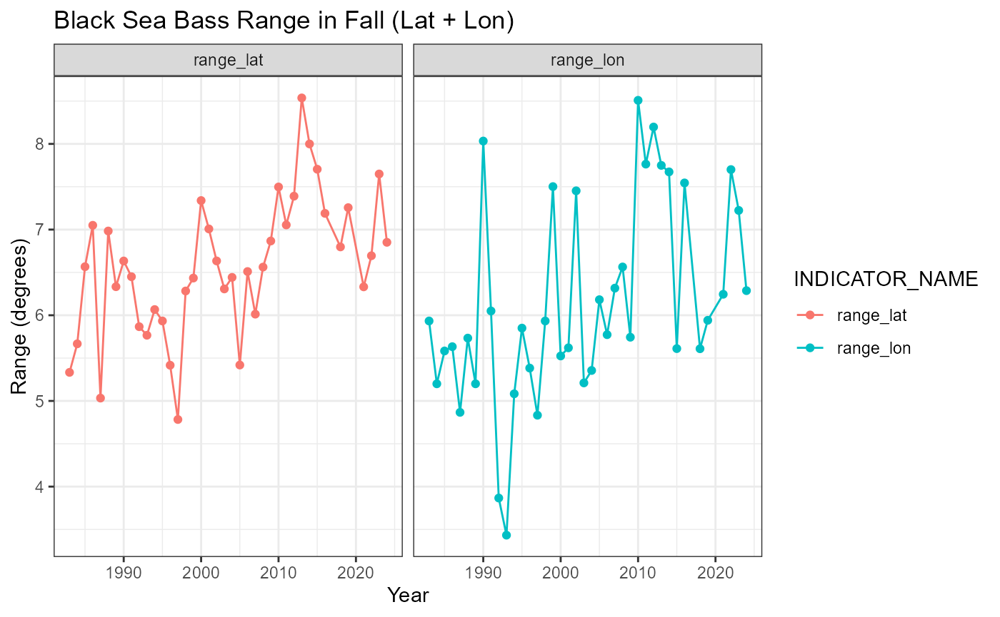
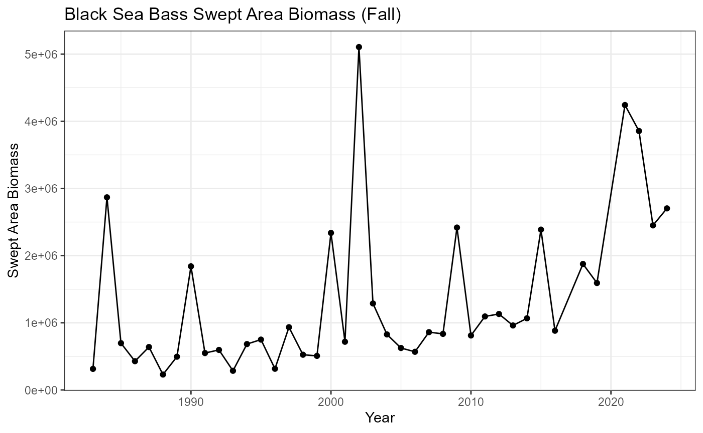

Using {survdat} for Bottom Trawl Indicators
Stephanie Owen and Abigail Tyrell
Source:vignettes/using_survdat_data.Rmd
using_survdat_data.RmdBottom Trawl Indicators in NEESP2
This package contains functions for producing bottom trawl indicators from {survdat} data pulls: swept area biomass, stratified mean biomass, species condition, diet, and range. This vignette provides example output data tables and plots using these functions.
For more information on accessing {survdat} data, see vignette “Accessing Bottom Trawl Survey Data”.
Species Condition - Black sea bass
Create and plot species condition
Uses ‘species_condition’ and ‘plot_condition’ functions in R/create_condition_indicator.R and R/plot_condition.R
condition <- species_condition(
data = NEesp2::survdat_subset,
LWparams = LWparams,
species.codes = species.codes,
output = "esp"
)## Joining with `by = join_by(STRATUM)`
## Joining with `by = join_by(count)`## # A tibble: 6 × 5
## Species EPU YEAR DATA_VALUE INDICATOR_NAME
## <chr> <chr> <dbl> <dbl> <chr>
## 1 Black sea bass MAB 1992 0.985 mean condition
## 2 Black sea bass MAB 1993 0.998 mean condition
## 3 Black sea bass GB 1994 0.983 mean condition
## 4 Black sea bass MAB 1994 1.02 mean condition
## 5 Black sea bass MAB 1995 0.997 mean condition
## 6 Black sea bass MAB 1996 0.982 mean condition
plot_condition(data = bsb_condition, var = "Black sea bass")Data are aggregated at the EPU level by default, but the data can also be assessed as a unit.
condition <- species_condition(
data = NEesp2::survdat_subset,
LWparams = LWparams,
species.codes = species.codes,
output = "esp",
by_EPU = FALSE
)## Joining with `by = join_by(count)`## # A tibble: 6 × 5
## Species EPU YEAR DATA_VALUE INDICATOR_NAME
## <chr> <chr> <dbl> <dbl> <chr>
## 1 Black sea bass UNIT 1992 0.986 mean condition
## 2 Black sea bass UNIT 1993 0.997 mean condition
## 3 Black sea bass UNIT 1994 1.01 mean condition
## 4 Black sea bass UNIT 1995 0.995 mean condition
## 5 Black sea bass UNIT 1996 0.981 mean condition
## 6 Black sea bass UNIT 1997 0.986 mean condition
plot_condition(data = bsb_condition, var = "Black sea bass")Create species condition for the State of the Ecosystem report
By setting output = "soe", the
species_condition function will format the output in the
same style as ecodata::condition. Note that black sea bass
is the only species included in the sample dataset shown below, but if
additional species were present in the data, the output would be
aggregated at the species level.
condition <- species_condition(
data = NEesp2::survdat_subset,
LWparams = LWparams,
species.codes = species.codes,
output = "soe"
)## Joining with `by = join_by(STRATUM)`
## Joining with `by = join_by(count)`
head(condition)## # A tibble: 6 × 5
## Time Var EPU Value Units
## <dbl> <chr> <chr> <dbl> <chr>
## 1 1992 Black sea bass MAB 0.985 MeanCond
## 2 1993 Black sea bass MAB 0.998 MeanCond
## 3 1994 Black sea bass GB 0.983 MeanCond
## 4 1994 Black sea bass MAB 1.02 MeanCond
## 5 1995 Black sea bass MAB 0.997 MeanCond
## 6 1996 Black sea bass MAB 0.982 MeanCondAdditional condition queries
species_condition can also assess the data by sex and by
length bin. If these options are selected, the output will be a “full”
dataset that contains additional data columns identifying the grouping
parameters and data variance. For example:
condition <- species_condition(
data = NEesp2::survdat_subset,
LWparams = LWparams,
species.codes = species.codes,
by_sex = TRUE,
length_break = c(0, 20, 65)
)## You asked to group results by sex and/or length ; data will not be formatted for SOE or ESP output.## Joining with `by = join_by(STRATUM)`
## Joining with `by = join_by(count)`
head(condition)## # A tibble: 6 × 10
## Species YEAR EPU sexMF length_group MeanCond nCond sd variance
## <chr> <dbl> <chr> <chr> <fct> <dbl> <int> <dbl> <dbl>
## 1 Black sea bass 1992 MAB 0 [0,20] 1.08 5 0.0509 0.00260
## 2 Black sea bass 1992 MAB 1 (20,65] 0.934 6 0.0595 0.00354
## 3 Black sea bass 1992 MAB 2 [0,20] 0.994 36 0.0248 0.000613
## 4 Black sea bass 1992 MAB 2 (20,65] 0.950 16 0.0391 0.00153
## 5 Black sea bass 1993 MAB 1 [0,20] 0.981 5 0.0392 0.00154
## 6 Black sea bass 1993 MAB 1 (20,65] 0.973 14 0.0595 0.00354
## # ℹ 1 more variable: INDICATOR_NAME <chr>Species Range - Black sea bass in fall
Uses ‘species_range’ function in R/create_bottomtrawl_indicators.R
range <- species_range(data = NEesp2::survdat_subset, species = NEesp2::species)## Joining with `by = join_by(SVSPP)`
bsb_range <- range %>%
subset(SPECIES == "BLACK SEA BASS") %>%
subset(SEASON == "FALL") %>%
subset(INDICATOR_NAME == c("range_lat", "range_lon"))
head(bsb_range)## # A tibble: 6 × 7
## YEAR SEASON INDICATOR_NAME DATA_VALUE SPECIES SVSPP INDICATOR_UNITS
## <dbl> <chr> <chr> <dbl> <chr> <dbl> <chr>
## 1 1983 FALL range_lat 5.33 BLACK SEA BASS 141 degrees
## 2 1983 FALL range_lon 5.93 BLACK SEA BASS 141 degrees
## 3 1984 FALL range_lat 5.67 BLACK SEA BASS 141 degrees
## 4 1984 FALL range_lon 5.2 BLACK SEA BASS 141 degrees
## 5 1985 FALL range_lat 6.57 BLACK SEA BASS 141 degrees
## 6 1985 FALL range_lon 5.58 BLACK SEA BASS 141 degrees
bsb_range %>%
ggplot2::ggplot(ggplot2::aes(
x = YEAR,
y = DATA_VALUE,
color = INDICATOR_NAME,
)) +
ggplot2::geom_point() +
ggplot2::geom_path() +
ggplot2::theme_bw() +
ggplot2::labs(
title = "Black Sea Bass Range in Fall (Lat + Lon)",
x = "Year",
y = "Range (degrees)"
) +
ggplot2::facet_wrap("INDICATOR_NAME")
Swept area biomass - Black sea bass in fall
Uses ‘create_swept_area’ indicator in R/create_bottomtrawl_indicators.R
Modified from ‘calc_swept_area’ in {survdat} package.
bsb_swept_area <- create_swept_area(
surveyData = NEesp2::survdat_subset,
areaPolygon = "NEFSC strata",
areaDescription = "STRATA",
filterByArea = "all",
filterBySeason = "FALL",
groupDescription = "SVSPP",
filterByGroup = "all",
mergesexFlag = T,
tidy = F,
q = NULL,
a = 0.0384
) %>%
dplyr::filter(SVSPP == "141")## Prepping data ...## Spherical geometry (s2) switched off## Linking to GEOS 3.13.0, GDAL 3.10.1, PROJ 9.5.1; sf_use_s2() is FALSE## Filtering data ...## [1] 3820 3880 3890 3900 3920 1352 0 3860 3840 3870 1390 1351
## [13] 1380 3850 1360 1330 1340 3760 3790 3830 3800 3730 3810 1400
## [25] 3770 3780 3740 3750 3908 3720 3710 1270 1370 1260 3700 1310
## [37] 1280 3690 3680 3670 3660 3650 3630 3640 3620 1320 1290 1300
## [49] 1240 1220 1210 3580 3610 3590 3600 1200 3560 1180 1170 1160
## [61] 3570 1190 1230 1250 3470 3500 3510 3530 3550 3520 3540 3480
## [73] 3450 3460 1050 1090 1130 3010 3020 3030 1100 3040 3050 1060
## [85] 3060 3070 3080 1140 1150 1010 3090 3100 3110 3120 3130 3140
## [97] 1020 1070 1110 1120 3150 3160 3170 1080 1730 1030 1040 3180
## [109] 3190 3200 1740 1750 3220 3230 1760 1690 3240 3250 3260 1700
## [121] 1710 3270 3280 3290 1720 3300 3310 3320 1650 1660 1670 3330
## [133] 1680 3340 3350 3360 3370 3380 3390 3400 3410 1610 1620 1630
## [145] 1640 3420 3430 3440 8510 8520 8530 8500 7500 7510 7520 7540
## [157] 7550 99999 7590 8540 7530 7570 7600 7580 8550 7610 8560 8570
## [169] 7620 7630 7640 8580 7650 7660 7670 8590 8600 8770## Calculating Stratified Mean ...## Calculating Swept Area Estimate ...## Assuming a value of q = 1411 for all groups
head(bsb_swept_area)## # A tibble: 6 × 8
## YEAR SVSPP variance se sd INDICATOR_UNITS INDICATOR_NAME DATA_VALUE
## <dbl> <dbl> <dbl> <dbl> <dbl> <chr> <chr> <dbl>
## 1 1983 141 6.11e 8 2.47e4 1.15e6 numberstow-1 swept_area_bi… 313872.
## 2 1984 141 3.83e 7 6.19e3 1.15e6 numberstow-1 swept_area_bi… 2867870.
## 3 1985 141 1.41e 9 3.76e4 1.15e6 numberstow-1 swept_area_bi… 696770.
## 4 1986 141 2.78e 9 5.27e4 1.15e6 numberstow-1 swept_area_bi… 428373.
## 5 1987 141 4.42e10 2.10e5 1.15e6 numberstow-1 swept_area_bi… 639254.
## 6 1988 141 5.16e 9 7.19e4 1.15e6 numberstow-1 swept_area_bi… 229675.
bsb_swept_area %>%
ggplot2::ggplot(ggplot2::aes(
x = YEAR,
y = DATA_VALUE,
)) +
ggplot2::geom_point() +
ggplot2::geom_path() +
ggplot2::theme_bw() +
ggplot2::labs(
title = "Black Sea Bass Swept Area Biomass (Fall)",
x = "Year",
y = "Swept Area Biomass"
)
Stratified mean biomass - Black sea bass in fall
Uses ‘create_stratified_mean’ indicator in R/create_bottomtrawl_indicators.R
Modified from ‘calc_stratified_mean’ in {survdat} package.
bsb_strat_mean <- create_stratified_mean(
surveyData = survdat_subset,
areaPolygon = "NEFSC strata",
areaDescription = "STRATA",
filterByArea = "all",
filterBySeason = "FALL",
groupDescription = "SVSPP",
filterByGroup = "all",
mergesexFlag = T,
tidy = F,
returnPrepData = F
) %>%
dplyr::filter(SVSPP == "141")## Prepping data ...## Filtering data ...## [1] 3820 3880 3890 3900 3920 1352 0 3860 3840 3870 1390 1351
## [13] 1380 3850 1360 1330 1340 3760 3790 3830 3800 3730 3810 1400
## [25] 3770 3780 3740 3750 3908 3720 3710 1270 1370 1260 3700 1310
## [37] 1280 3690 3680 3670 3660 3650 3630 3640 3620 1320 1290 1300
## [49] 1240 1220 1210 3580 3610 3590 3600 1200 3560 1180 1170 1160
## [61] 3570 1190 1230 1250 3470 3500 3510 3530 3550 3520 3540 3480
## [73] 3450 3460 1050 1090 1130 3010 3020 3030 1100 3040 3050 1060
## [85] 3060 3070 3080 1140 1150 1010 3090 3100 3110 3120 3130 3140
## [97] 1020 1070 1110 1120 3150 3160 3170 1080 1730 1030 1040 3180
## [109] 3190 3200 1740 1750 3220 3230 1760 1690 3240 3250 3260 1700
## [121] 1710 3270 3280 3290 1720 3300 3310 3320 1650 1660 1670 3330
## [133] 1680 3340 3350 3360 3370 3380 3390 3400 3410 1610 1620 1630
## [145] 1640 3420 3430 3440 8510 8520 8530 8500 7500 7510 7520 7540
## [157] 7550 99999 7590 8540 7530 7570 7600 7580 8550 7610 8560 8570
## [169] 7620 7630 7640 8580 7650 7660 7670 8590 8600 8770## Calculating Stratified Mean ...
head(bsb_strat_mean)## # A tibble: 6 × 9
## YEAR SEASON SVSPP variance se sd INDICATOR_UNITS INDICATOR_NAME
## <dbl> <chr> <dbl> <dbl> <dbl> <dbl> <chr> <chr>
## 1 1983 FALL 141 0.000850 0.0292 0.845 kgtow-1 strat_mean_biomass
## 2 1984 FALL 141 0.000104 0.0102 0.845 kgtow-1 strat_mean_biomass
## 3 1985 FALL 141 0.00277 0.0527 0.845 kgtow-1 strat_mean_biomass
## 4 1986 FALL 141 0.00119 0.0344 0.845 kgtow-1 strat_mean_biomass
## 5 1987 FALL 141 0.0636 0.252 0.845 kgtow-1 strat_mean_biomass
## 6 1988 FALL 141 0.0233 0.153 0.845 kgtow-1 strat_mean_biomass
## # ℹ 1 more variable: DATA_VALUE <dbl>